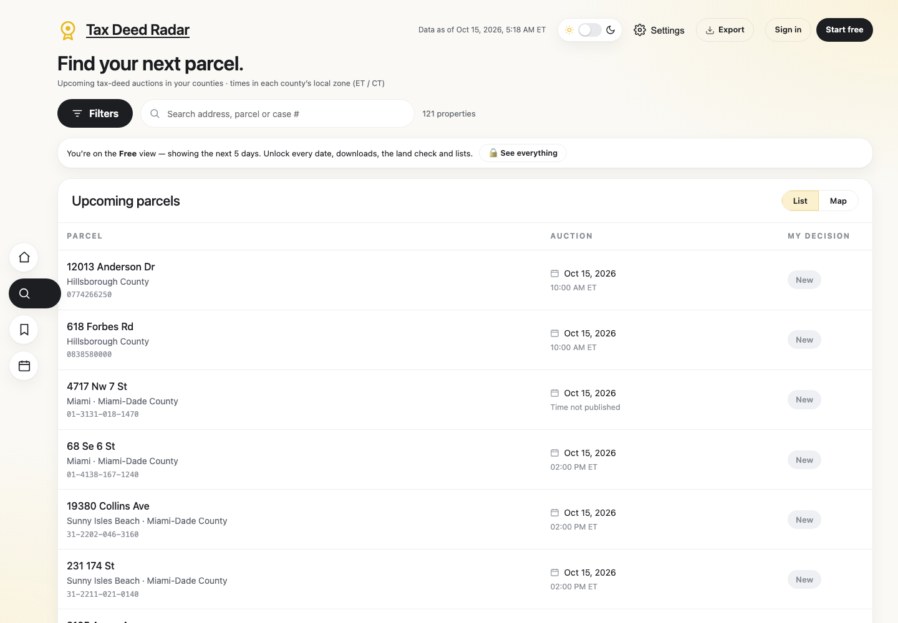
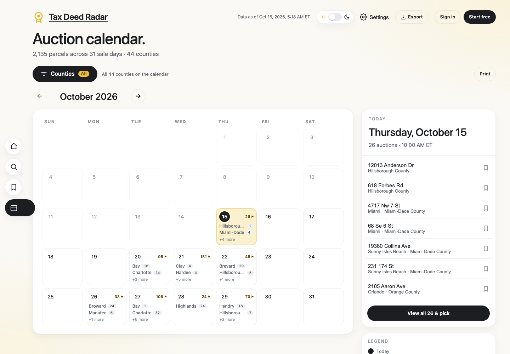

01
Find your field.
Filter the board by county, property type, and auction date. Start with the places and parcels you want to research.
COUNTY → PROPERTY → SALE DATEFlorida tax deed auction research
Find auctions, review property records, and plan your sale days in one place. Start with the parcels that fit your criteria, then follow the county sources before you bid.
Browse the next 5 days of sales on the free board.

From scattered tabs to a clear next step
The sale list is only the beginning. Bring the next steps into focus without rebuilding your research process in every county.
Filter the board by county, property type, and auction date. Start with the places and parcels you want to research.
COUNTY → PROPERTY → SALE DATEOpen parcel details, appraiser records, and clerk links. Where available, review case documents and land information.
RECORD AVAILABILITY VARIES BY COUNTYSee sale dates across your selected counties on one calendar. Keep your schedule close as you narrow the field.
ONE CALENDAR, MULTIPLE COUNTIES
See the week. Research the parcel.
A sale in one county. Another across the state. Put the dates together, see what is coming up, and open the parcels you want to investigate.
Start with the records
A preview from the same public-record feed the app uses. Browse here, then open the board for more research.
Scheduled records with sale dates today or later (Eastern Time). Status can change. Confirm the sale, price, and property details with the county. Assessed value is not a market valuation.
Find your starting point
Browse the free board to see how it fits your research. Paid access is currently arranged by email with the Tax Deed Radar team.
$0to explore
A place to start your auction research.
$297/ month
Full board access, billed monthly.
Opens your email app to arrange access.
$997/ year
Full board access, billed annually.
Opens your email app to arrange access.
Prices shown are the currently listed rates. Confirm current terms and access before paying. Ask for a walkthrough
The free board shows auctions in the next 5 days, along with available property details and county links. Paid plans expand the date window and research tools.
No. The directory covers all 67 Florida counties, but parcel-level feeds depend on each county’s sources. Other county pages may provide sale schedules and links to the clerk. Appraiser fields, case documents, and land data also vary.
The collection pipeline runs daily. The preview shows the feed’s update date; individual county sources may refresh at different times. Properties can be redeemed, sales can be cancelled, and records can be incomplete. Check directly with the county before you bid.
Use “Request monthly access” or “Request annual access” to email the team. Paid access currently uses an email handoff. Confirm the plan, payment instructions, cancellation process, and applicable terms with the team before paying.
Use Sign in for an existing account. If you have a promotional code, ask the team to confirm its eligibility and redemption steps for your account. Promotional access is subject to verification.
Your next research session starts here
Open the board. Pick your counties. Follow the records.